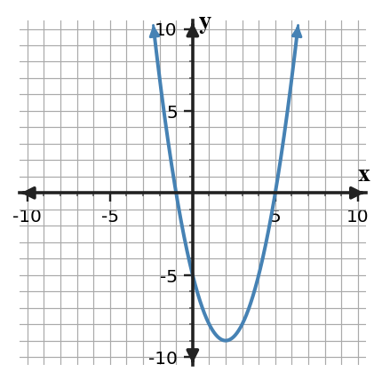

8.
Graph the system and label one point on each boundary that is included.

Practice comparing standard, factored, and vertex forms of quadratic functions. Focus on choosing the form that reveals the feature you need most directly.
Complete the equivalent forms for $y=x^2-6x+5$.
Rewrite $y=(x+3)^2-16$ in factored form and use both forms to identify the vertex and zeros.
Compare the equation $y=(x-2)^2-9$, the graph, and the table. Explain how each representation shows or hides the same key features.

| $x$ | $-1$ | $0$ | $2$ | $5$ |
|---|---|---|---|---|
| $y$ | $0$ | $-5$ | $-9$ | $0$ |
Recommend a form for each task using the same quadratic $y=x^2-6x+5$: finding zeros, finding the minimum, and finding the y-intercept. Justify each recommendation with an equivalent form when helpful.
What does a shaded half-plane represent?
For $x\le 4$, is the boundary vertical or horizontal?
Use substitution into each inequality to decide whether $(5,1)$ is feasible.
Graph the system and label one point on each boundary that is included.
The inequality $y\ge x-2$ and the table are supposed to agree about which points satisfy the inequality.
| Point | $(0,0)$ | $(3,0)$ | $(1,1)$ | $(-2,-3)$ |
|---|---|---|---|---|
| Listed result | Yes | Yes | Yes | No |
Find the first mismatch, correct it, and justify with substitution.
Construct a graphing strategy for $4x-2y\le 10$.
Your strategy must include rewriting the boundary, deciding solid or dashed, selecting a test point, and deciding the shaded side.
The table and equation describe the same line from a system. A second line is $y=-x+11$.
| $x$ | 2 | 4 | 6 |
|---|---|---|---|
| $y$ | 3 | 5 | 7 |
Synthesize the representations by writing an equation for the table line, then solve the system with the second line.
A club is choosing between two bus companies. Company A charges \$180 plus \$6 per student. Company B charges \$90 plus \$9 per student. A draft graph labels the intersection as $(30,270)$ but the written conclusion says “Company A is always cheaper.”
In $-2x^3+4x^2-x+9$, identify the degree and leading coefficient.
Compare the parent and transformed absolute value graph. Identify the reflection, stretch, and translation.

Analyze the structure of $y=(x-5)^2-9$ and $y=x^2-10x+16$. Decide whether they are equivalent and explain which graph features each form reveals.
Create two different translated functions from the parent $y=|x|$ that both pass through $(0,4)$ but have different vertices. Explain why both can pass through the shared point.